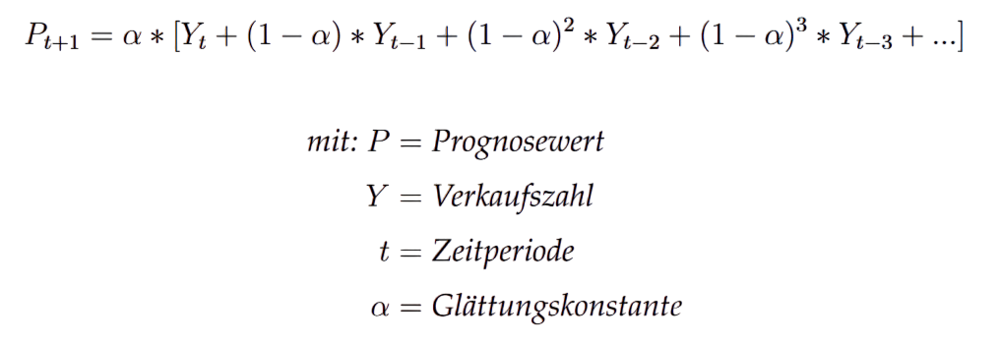

Nachfrageprognose
Definition
- sagt die Kundennachfrage für eine bevorstehende Zeitperiode vorher
- genutzt werden hierfür Analysen von Tagesbedarfsdaten aus vergangenen Perioden, Marktexperimente, Kundenbefragungen oder statistische Methoden
- eine statistische Methode ist z. B. die des Simple Moving Average (dt.: einfacher gleitender Durchschnitt) oder des Simple Exponential Smoothing (dt.: einfache exponentielle Glättung)
- Simple Moving Average (SMA):
- bestimmt auf simple Weise zukünftige Trends
- ermittelt wird der Durchschnitt der Verkaufszahlen aus n vergangenen Perioden
- behandelt alle Daten gleich

- der Simple Moving Average glättet den Verlauf der Verkaufszahlen
- Hoch- und Tiefpunkte werden abgeschwächt
- Simple Exponential Smoothing (SES):
- erweitert den Simple Moving Average, indem Werte exponentiell gewichtet werden, um saisonale Hochs bzw. Tiefs mit einzubeziehen
- gewichtet hierbei den neusten Wert am stärksten, den zweitneusten etwas weniger stark und so weiter
- genutzt wird die Glättungskonstante α, die einen Wert zwischen 0 und 1 besitzt und auf Basis von Erfahrungen, Saisons oder Versuchen bestimmt wird
Berechnung SMA

- existieren z. B. die Verkaufszahlen der letzten 10 Tage, werden diese aufsummiert und durch 10 dividiert
- dieser Durchschnitt stellt nun die Nachfrageprognose für den nächsten Tag dar
- um die Prognose für einen weiteren Tag zu ermitteln, wird die neuste Verkaufszahl der Rechnung hinzugefügt und die älteste fällt weg
- so bleibt die Anzahl der Perioden für jeden Tag konstant
Berechnung SES

- je höher α gewählt wird, desto stärker werden neuste Werte gewichtet
- bei α = 1 keine Glättung, da der Prognosewert dem Messwert entspricht
- bei α = 0 keine Beeinflussung der Vorhersage, Prognosewert bleibt unverändert
Zusatzaufgabe
Die Verkaufszahlen für die letzten Handelstage lauteten wie folgt:
| Tag | Verkaufszahl |
|---|---|
| 1 | 36 |
| 2 | 25 |
| 3 | 56 |
| 4 | 19 |
| 5 | 43 |
| 6 | 68 |
| 7 | 31 |
| 8 | 42 |
- Stelle eine Nachfrageprognose anhand des SMA für Tag 9 mithilfe der letzten 5 Handelstage auf.
- Berechne nun eine Nachfrageprognose für Tag 10.